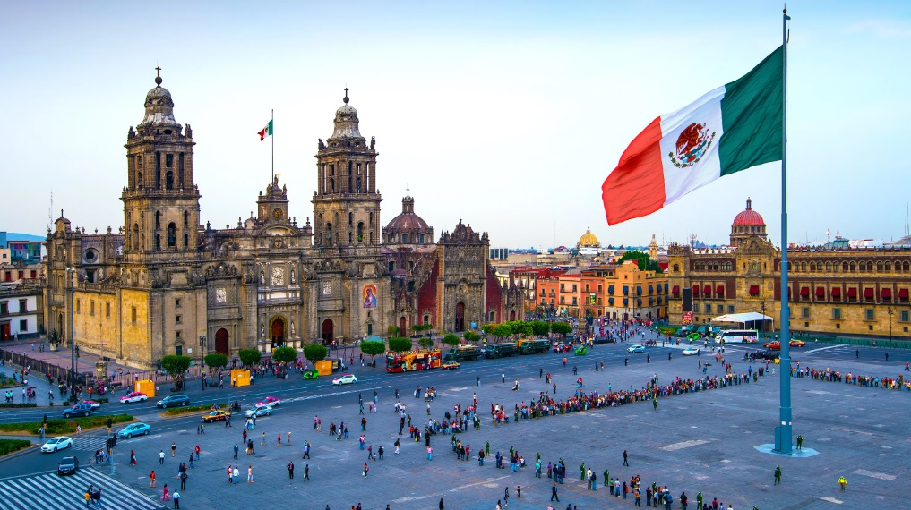
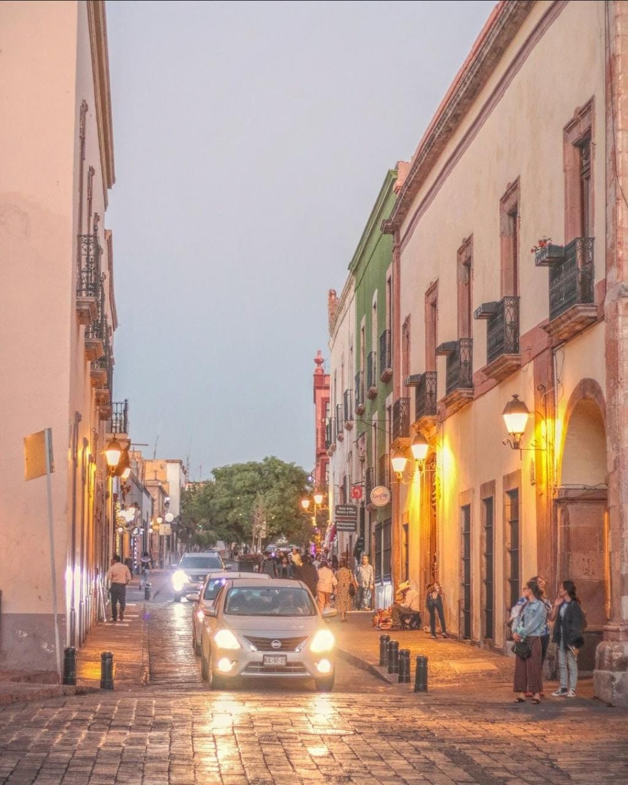
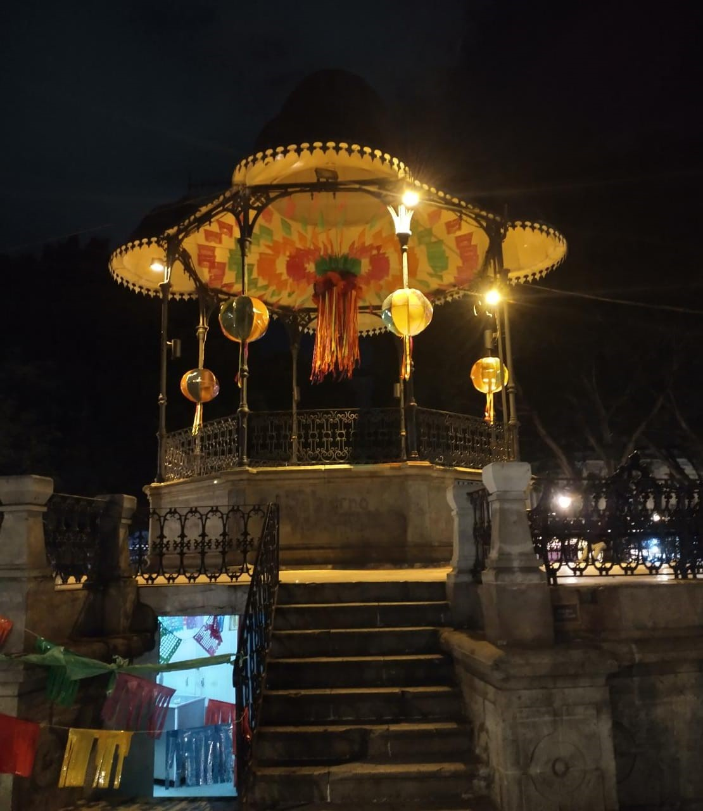
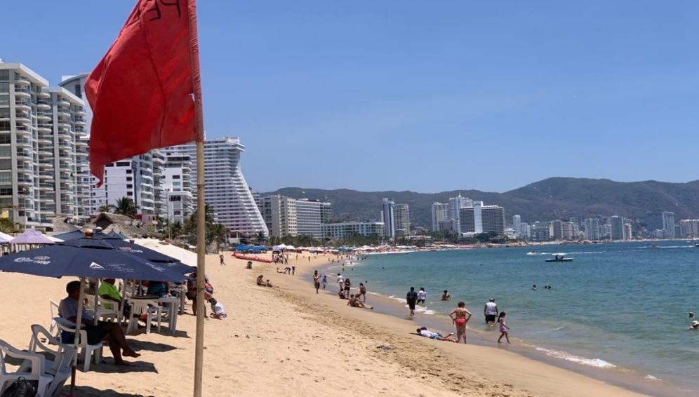
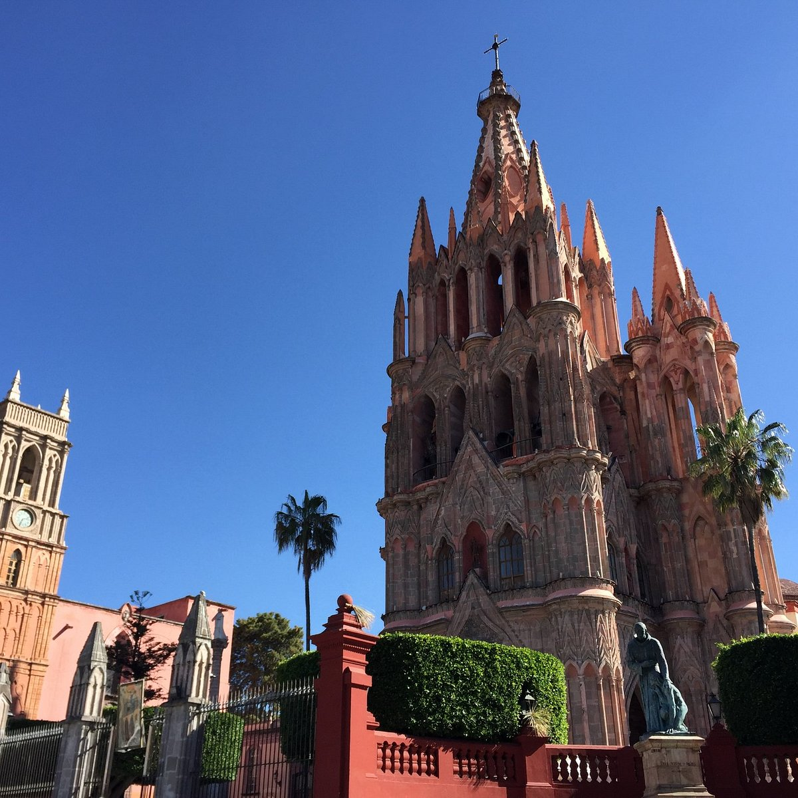
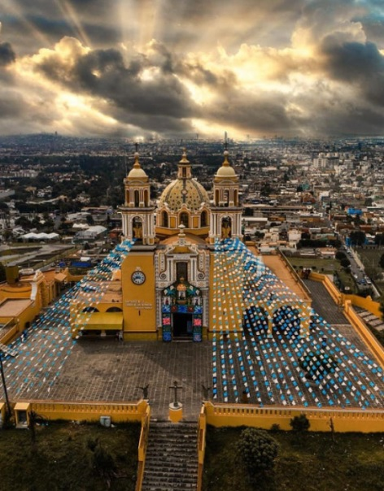

En esta lista te mostraremos los mejores lugares de México para visitar con tus amigos o familia al igual que te daremos una pequeña reseña del lugar y así te ayudemos a tomar la decisión de viajar a este grandioso país que te espera con grandes sorpresas. Hemos viajado a la mayoría de todos los estados de la república mexicana y te aseguramos que este vello país es más que la Rivera Maya.
En este hermoso país lleno de colores podrás encontrar bastante gastronomía, paisajes naturales, climas acogedores y gente maravillosa que con mucho gustó te recibirá.
Te recordamos que la mejor época para viajar es durante los meses de Diciembre a Abril, ya que en esas temporadas no hay tantos turistas y el clima esta más acogedor, dándote una mejor comodidad en tu viaje, al igual que te recomendamos rentar un automóvil para que puedas moverte a todos lados sin tener que preocuparte si alcanzas transporte o sufrir algún acto de violencia.
Sin mas que decir te mostraremos nuestros 10 mejores lugares para visitar en México
1- Ciudad de méxico
Situada a más de 2000 metros sobre el nivel del mar y con más de 20 millones de habitantes, esta ciudad tiene un bonito casco antiguo que gira alrededor del Zócalo, ruinas de civilizaciones antiguas como las del Templo Mayor, museos interesantes como el de Frida Kahlo y barrios con encanto como el de San Ángel y Coyoacán.
En eta ciudad podras encontrar platillos como: 1)Tlacoyos 2)Quesadillas 3)Gorditas 4)Sopes 5)Huaraches
Reseña
En la Ciudad de México encontraras todo tipo de antojitos mexicanos, desde una torta de tamal o mejor conocida guajolota hasta un rico mole de olla.
Al llegar a la ciudad podrás observar que en el centro de la ciudad hay edificios y monumentos que conservan bastante historia de México al igual que podrás encontrar ruinas de las antiguas civilizaciones como la cultura maya,
todos estos lugares son tan hermosos para visitar y lo puedes hacer desde tu propio carro hasta en metro, el cual este es otro punto a favor ya que la ciudad cuenta con todo tipo de transporte pero también tiene contras ya que en algunas colonias de la ciudad o a la afueras de estas llegan a ser un tano peligrosas por las noches por lo mismo es mas recomendado viajar con tu propio vehículo. Si quisierar descargar algun triptico para conocer mejor el turismo en cedmx presiona aqui


2- Queretaro
Querétaro es una joya geográfica de México que posee los más diversos atractivos turísticos para todos los gustos e intereses que buscan una alternativa en el centro del país.
Desde la rica mezcla entre la contemporaneidad de su metrópoli creativa con el pasado vibrante de su Centro Histórico, hasta las maravillas naturales de su Sierra Gorda, pasando por el atractivo culinario de su región de vinos y quesos, o el aire puro y la tranquilidad de sus bosques y campos del sur, Querétaro lo tiene todo.
Asi como tambien tien una gastronomia muy variada que incluye: 1) Charape 2)Chivito Tapeado 3)Enchilada Queretana 4)Gorditas de Migajas 5)Guichepos
Reseña
En esta ciudad si vienes de otro país no podrás llegar tan fácil ya que lamentablemente no cuenta con aeropuerto así que tendrás que trasladarte de otra ciudad para poder llegar pero eso no quita el echo de que es un lugar muy pintoresco con una arquitectura barroca y neoclásica la cual podrás encontrar en el centro de Querétaro y en sus calles principales,
pero también cuenta con bosques, museos, restaurantes de comida tradicional, teatros, jardines, miles de cosas por visitar y conocer, pero sin dudad el lugar más bonito es su ciudad y es un lugar muy acogedor para visitar en familia, ya que sus calles son bastantes tranquilas y para llegar a hospedarte hay muchos lugres en el centro que son muy seguros y acogedores,
sin duda un muy buen lugar para las personas que les gustan caminar por calles y observar la arquitectura neoclásica. Si quisieras descargar un triptico para conocer mas obre el turismo en quretaro persiona aqui
3- Guanajuato
Capital del estado con el mismo nombre y declarada Patrimonio de la Humanidad por la UNESCO, Guanajuato es una de las ciudades coloniales que visitar en México imprescindibles.
Además de disfrutar del buen ambiente estudiantil y de la colorida arquitectura, merece la pena visitar alguna de sus maravillas como el Teatro Juárez, el Mirador del Pípila, el Museo Casa Diego de Rivera, la Universidad o la Basílica Colegiata de Nuestra Señora de Guanajuato, entre otros.
Los principales platillos que puedes encontrar son:
1) Enchiladas mineras 2) Patitas de puerco 3) Caldo de oso 4) Pico de gallo con xoconostle 5)Fiambre
Despues de haber llegado a esta hermosa ciudda puedes hopedarte en los mejores hoteles de Guanajuato, para que en la noche disfrutes una cena en los mejores lugares de comida
Reseña
Guanajuato es un estado en el que sin dudad podrás pasar un excelente fin de semana, ya que el centro de esta hermosa ciudad suele ser tranquila y cuenta con grandes actividades como pasear por sus hermosos túneles, visitar lugares como el teatro Juárez, el mirador del pípila que por cierto desde ese lugar podrás obtener una vista fascinante de la ciudad, la universidad que tiene un estilo muy barroco, el callejón del beso, etc.
. Al terminar de visitar alguno de estos lugares te recomendamos que pruebes alguno de los platillos más populares como las enchiladas mineras y al concluir el día podrás descansar en algún hotel de la ciudad, este es un punto no tan a favor ya que lamentablemente no hay hoteles en el centro de la ciudad así qué tendrás que hopearte un poco a sus afueras. Si quisieras tener una mejor presentacion de guanajuato y descargar un triptico presiona aqui

4- Acapulco
Acapulco es reconocido por haber sido el primer puerto turístico internacional de México, pero también por la calidez de su gente, su amplia oferta turística con actividades para todos los gustos y edades como sol y playa, cultura, gastronomía, bienestar y relajación, naturaleza, aventura, romance, compras y los mejores eventos, lo convierten en uno de los principales destinos de playa en México.
Su indiscutible belleza natural está enmarcada por más de 50 kilómetros de playa, dos bahías rodeadas de exuberantes montañas y dos lagunas escoltadas por impresionantes manglares que te harán disfrutar de este destino icónico de México de una forma diferente y única.
Acapulco tiene una gran gastronomia y esta incluye: 1) Caldo a la talla 2)Caldo de cabezas de pescado 3)Calamares rellenos 4) Tamales de pescado 5)Pulpos en vinagro
Reseña
Acapulco es sin duda es un lugar para vacacionar con familia o amigos ya que cuenta con maravillosas playas para visitar, al igual que cuenta con muchas atracciones turista y actividades como el buceo, el paso en lancha para conocer algunas casas de personas famosas, ver a la imagen de la virgen que está en el mar, visitar su centro histórico o pasar un hermoso día en algún crucero,
todas estas actividades suele ser muy tranquilas y divertidas de hacer con la familia, el único problema que suele haber en este lugar es la contaminación ya que sus calles a veces están un tanto sucias al igual que sus playas suele estar un poco sucias por la contaminación de los hoteles. Si quisieras descargar un triptico acerca de acapulco presiona aqui

5- Oaxaca
Oaxaca enamora a todos los viajeros por sus ancestrales tradiciones, su belleza arquitectónica y su magnífica gastronomía, además de sus numerosos puntos de interés como el Templo de Santo Domingo de Guzmán, el Jardín Etnobotánico o la Catedral Metropolitana. Visitar la ciudad de Oaxaca, Patrimonio de la Humanidad y conocida como la Verde Antequera por sus bonitas construcciones de cantera verde de estilo Colonial, es otra de los cosas que hacer en México.
La principal gastronomía de Oaxaca se basa en: 1)Tuxtepec 2)Juachitan 3)Tamales oaxaqueños 4)Arroz con chepiles 5)Mole
Reseña
Oaxaca sin duda es un hermoso lugar que vale la pena visitar, ya que cuenta con hermosas atracciones turísticas, como el monte Albán, su catedral, su centro que sin duda es muy hermoso ya que conserva un estilo muy barroco o si eres mas amante del mar, sus playas sin dudas te van a enamorar ya que suelen ser muy limpias y tranquilas y su clima no es para nada bochornoso,
lo único malo del mar son sus carreteras para llegar ya que el camino esta en medio de cerros y por lo tanto están muy reducidos y están algo dañados y suele haber mucha neblina por eso lo mas recomendado es que viajes por las mañanas para evitar cualquier tipo de neblina, pero si solo quieres visitar su capital sin duda disfrutaras de tu estadía. Si quisieras descargar un triptico acerca de oaxaca presiona aqui
6-San Miguel de Allende
Declarada Patrimonio de la Humanidad por la Unesco, la ciudad es como un lienzo de colores vivos en la que es obligado perderse por su centro histórico. Sus calles empedradas rodeadas de color, la arquitectura colonial de sus casas, los mercados de artesanías, sus plazas e iglesias antiguas forman un conjunto difícil de superar.
Reseña
San Miguel de Allende es un excelente destino para viajar ya sean con familia o amigos, su principal atracción de este lugar es su hermosa catedral que desde el exterior se puede observar el estilo barroco que conserva, sin lugar a duda la mejor época para visitar este lugar es en semana santa ya que llegan procesiones de muchos lugares y el centro se suele convierte en toda una fiesta para los turistas.
Este lugar es bastante tranquilo y acogedor para todas las personas que lo suelen visitar ya que la delincuencia es bastante tranquila y muy reducida a diferencia de otros lugares ya que es una zona que esta vigilada, sin lugar a duda San Miguel de Allende es un destino muy acogedor y seguro. Si quisieras descargar un triptico acerca de san Miguel de Allende presiona aqui


7-Puebla
Situada al pie del volcán Popocatepetl, esta ciudad enamora a primera vista por su centro histórico de arquitectura colonial con algunas joyas como la Catedral, la Biblioteca Palafoxiana, el Templo de San Francisco, la Calle Santa Clara y el Barrio de los Artista.
Reseña
Puebla es una ciudad pequeña pero con edificios con un estilo colonial, al llegar a esta ciudad notaras que tiene bastantes iglesias que podrás visitar, pero de tantas no te puedes perder la principal la cual es muy hermosa por fuera y por adentro y al salir podrás descansar comiendo algún platillo típico como el mole poblano o comer alguna deliciosa nieve,
sin duda es un lugar muy tranquilo de visitar llena de colores e historia por conocer, en este lugar no hay muchas opiniones en contra ya que suele ser un lugar muy reservado, por ende no suelen haber muchos actos de violencia. Si quisieras conocer un poco mas acerca de puebla, descarga el triptico presionando aqui
8-Ixtapa-Zihuatanejo
Ixtapa/Zihuatanejo es un destino de playa con dos panoramas muy diferentes. Zihuatanejo es un pueblo de pescadores con un ambiente tranquilo y relajado, y una atmósfera tradicional mexicana. Ixtapa es un moderno complejo turístico con lujosos hoteles sobre la playa, así como restaurantes, discotecas, campos de golf, y una gran variedad de tiendas y condominios.
Reseña
Zihuatanejo es un lugar bastante acogedor para vacacionar, una característica que lo diferencia de su vecino Ixtapa, es que en este lugar podrás encontrar hoteles y restaurantes a un precio mas accesible si es que no cuentas con mucho presupuesto, pero eso no significa que sea un lugar más feo o peligroso.
Ixtapa suele ser un poco más caro y lujos, así que si deseas gastar más o gozar de mas lujos en tu estadía te recomendamos Ixtapa, lo único malo de estos dos lugares es su camino ya que su carretera para llegar es algo peligrosa, suelen suceder algunos asaltos, por eso mismo es mas recomendad viajar en el día. Si quisieras mas informacion acerca de ixtapa porfavor presione aqui